EKYLIBRE : GUIDE DE DÉMARRAGE RAPIDE
EKYLIBRE : DÉMARRAGE RAPIDE
GUIDE DE DÉMARRAGE RAPIDE
1 - Prérequis
2 - Introduction
3 - Parcellaire
4 - Exploitation
5 - L’interface
6 - Stock & Personnel
7 - Production
8 - Accès
Dans ce chapitre vous allez découvrir :
Dans le cadre du travail en équipe, que ce soit pour saisir des interventions, des factures, des commandes, vous avez besoin de partager certaines informations de votre ferme Ekylibre avec d'autres personnes (techniciens, ouvriers, commerciaux, etc) qui représentent les utilisateurs.
Des accès peuvent être accordés par l'administrateur de la ferme à ces utilisateurs qui disposent ainsi de droits de lecture et/ou d'écriture pour tout ou partie des données gérées dans l'application.
Par défaut, deux catégories d'utilisateurs existent : le gérant de la ferme (l'administrateur système) qui dispose de tous les droits et pour les autres, un statut public qui n'en possède aucun par sécurité.
A – Procédure de création des utilisateurs
Le processus suivant vous guide pour créer un nouvel utilisateur.
Pour créer de nouveaux utilisateurs, allez dans le menu principal et cliquez sur la clef anglaise ou cliquez sur le bouton "Configuration" de la page d'accueil :
ou cliquez sur le bouton "Configuration" de la page d'accueil :
Dans la barre latérale du module, cliquez sur "Utilisateurs" dans la rubrique "Accès" symbolisée par l'icône d'un bouclier. La liste des utilisateurs n'affiche que le nom de l'administrateur de la ferme avec l'indicateur(Administrateur système) à droite de son nom.
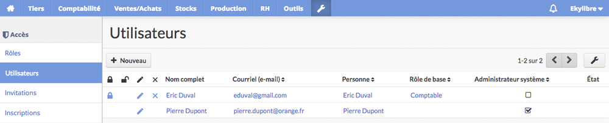
Cliquez sur "Nouveau". Tous les champs situés dans la zone "Informations générales" sont à renseigner. Notez que l'attribution d'un mot de passe est obligatoire même si ce n'est pas signalé par l'astérisque de couleur rouge.
Choisissez un mot de passe facilement mémorisable mais assez difficile à trouver : ça peut être une phrase composée d'une majuscule, avec un signe de ponctuation et un chiffre comme par exemple : Vousetes2chezEkylibre!

Associez le nouvel utilisateur à un tiers déjà configuré (voir chapitre 6 - Stock et Personnel) ou créez en un nouveau à la volée en sélectionnant "Ajouter un nouvel enregistrement" dans la liste déroulante. Complétez les informations du nouveau contact (n° de téléphone, adresse postale, employé, client ou fournisseur, etc) pour le définir correctement.
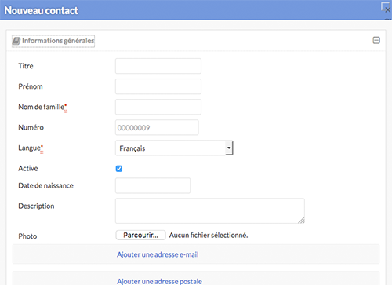
Choisissez les droits que vous octroyez à l'utilisateur. Vous pouvez partir d'un rôle d'utilisateur (voir plus loin dans ce chapitre) et étendre ou restreindre ses droits en rapport avec sa fonction dans la ferme.
Liste des droits disponibles dans l'application :

En tant qu'administrateur de la ferme, vous êtes le principal décideur quant aux accès dont vont disposer les utilisateurs pour travailler dans l'application. Nous vous conseillons cependant de ne pas donner trop de droits à tout le monde.
Cliquez suren bas de la fenêtre principale pour valider la création du nouvel utilisateur.
Répétez ce processus pour chaque nouvel utilisateur que vous souhaitez ajouter à votre ferme. Vous pouvez modifier, bloquer et supprimer des utilisateurs si nécessaire.
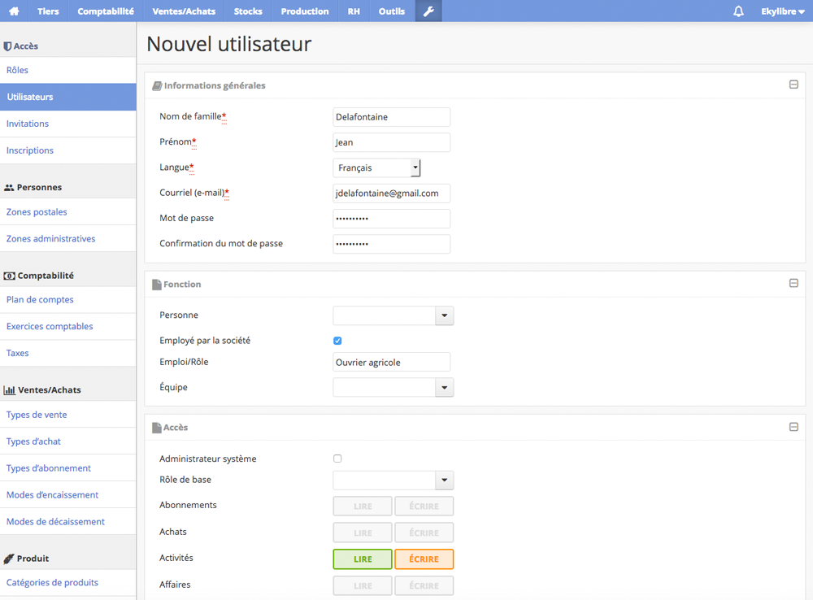
Vous pouvez créer un accès pour votre expert comptable qui lui permettra de visualiser et de modifier les données comptables de votre exploitation à distance.
Si vous vous séparez d'un collaborateur et que vous souhaitez bloquer son accès à votre ferme tout en conservant l'historique de ses interventions, ne le supprimez pas de la liste des utilisateurs. Verrouillez plutôt son compte en cliquant sur le cadenas ferméà gauche de son nom. Pour déverrouiller un utilisateur, cliquez sur le cadenas ouvert.
Si plusieurs personnes occupent des fonctions similaires dans votre ferme (commerciaux, techniciens, ouvriers agricoles), la création de rôles d'utilisateur permet de simplifier l'affectation de droits à ces utilisateurs grâce à des profils types.
Des rôles d'utilisateur sont déjà définis dans l'application que vous pouvez attribuer à vos utilisateurs. Si ces rôles ne répondent pas strictement à vos attentes, vous pourrez les modifier en supprimant et en ajoutant des droits, ou bien créer de nouveaux rôles.
Glissez pour parcourir le tableau
Rôles d'utilisateurs prédéfinis et leurs droits
Tableau 1
A – Procédure pour piocher des rôles d'utilisateur
Le processus suivant vous guide pour sélectionner des rôles d'utilisateur parmi ceux disponibles dans l'application.
Pour accéder aux rôles d'utilisateur, allez dans le menu principal et cliquez sur la clef anglaise ou cliquez sur le bouton "Configuration" de la page d'acceuil :
ou cliquez sur le bouton "Configuration" de la page d'acceuil :
Dans la barre latérale du module, cliquez sur "Rôles" dans la rubrique "Accès" symbolisée par l'icône d'un bouclierpour afficher la liste des rôles.
Cliquez sur le bouton "Piocher". Un menu "Référence" s'affiche et une liste déroulante vous permet de sélectionner un rôle d'utilisateur. Cliquez sur "Importer" pour intégrer le rôle d'utilisateur dans votre ferme.
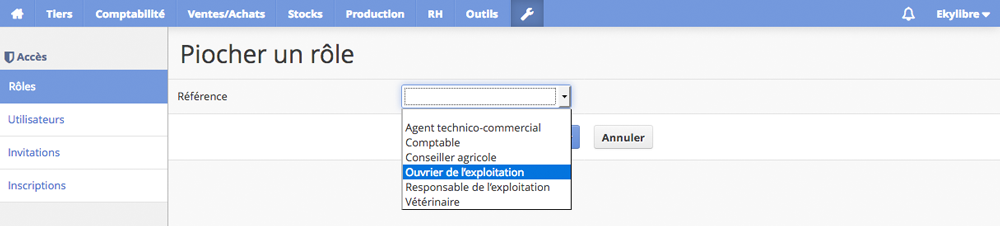
Répétez l'opération pour chaque rôle d'utilisateur que vous souhaitez utiliser et la liste des rôles va s'enrichir automatiquement.
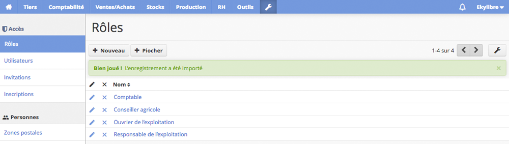
Cliquez sur le nom d'un rôle d'utilisateur pour connaître les droits octroyés et vérifier qu'ils sont conformes à vos attentes.
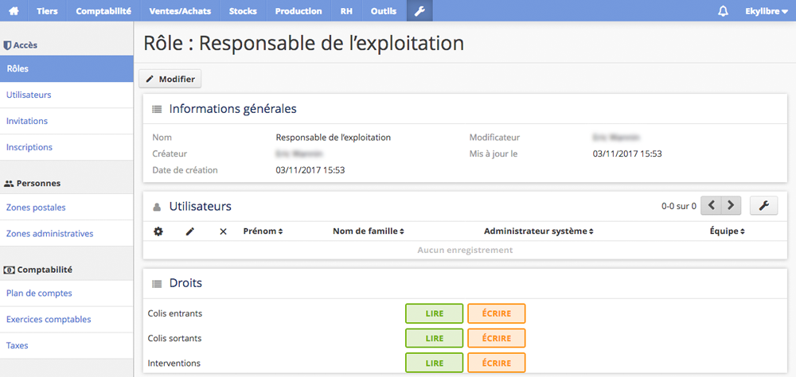
Si aucun des rôles prédéfinis ne répond à vos besoins et que vous préférez partir d'un modèle "vierge", voici comment en créer de nouveaux selon vos critères :
B – Procédure de création des rôles d'utilisateur
Le processus suivant vous guide pour créer des rôles d'utilisateur.
Pour accéder aux rôles d'utilisateur, allez dans le menu principal et cliquez sur la clef anglaise ou cliquez sur le bouton "Configuration" de la page d'accueil :
ou cliquez sur le bouton "Configuration" de la page d'accueil :
Dans la barre latérale du module, cliquez sur "Rôles" dans la rubrique "Accès" symbolisée par l'icône d'un bouclierpour afficher la liste des rôles. Elle est vide si vous n'avez pas déjà pioché de rôles dans l'application.
Saisissez le nom du rôle et définissez les droits à accorder pour chaque fonctionnalité de l'application. Cliquez sur les boutons qui lui sont associés. L'activation d'un droit est symbolisée par la mise en couleur d'un ou de plusieurs boutons en fonction des liens logiques qui existent entre eux (exemple : l'activation du droit "Réouvrir" entraîne automatiquement l'activation du droit "Lire").
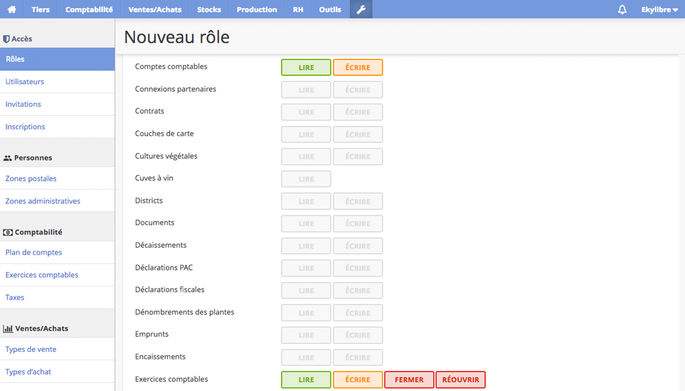
Cliquez suren bas de la fenêtre principale pour valider l'opération.
Répétez ce processus pour chaque nouveau rôle que vous souhaitez ajouter à votre ferme.
Vous pouvez modifier et supprimer des rôles si nécessaire.
C – Procédure de modification des rôles d'utilisateur
Le processus suivant vous guide pour modifier les rôles d'utilisateur.
Pour accéder aux rôles d'utilisateur, allez dans le menu principal et cliquez sur la clef anglaise ou cliquez sur le bouton "Configuration" de la page d'accueil :
ou cliquez sur le bouton "Configuration" de la page d'accueil :
Dans la barre latérale du module, cliquez sur "Rôles" dans la rubrique "Accès" symbolisée par l'icône d'un bouclierpour afficher la liste des rôles.
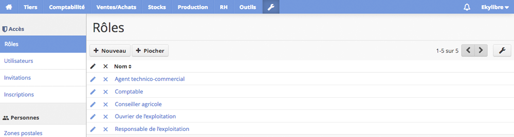
Cliquez sur l'icône "Crayon"à gauche du nom du rôle.
Cliquez ensuite sur le bouton "Modifier", puis définissez les droits à accorder pour chaque fonctionnalité de l'application. Cliquez sur les boutons qui lui sont associés. L'activation d'un droit est symbolisée par la mise en couleur d'un ou de plusieurs boutons en fonction des liens logiques qui existent entre eux (exemple : l'activation du droit "Réouvrir" entraîne automatiquement l'activation du droit "Lire").
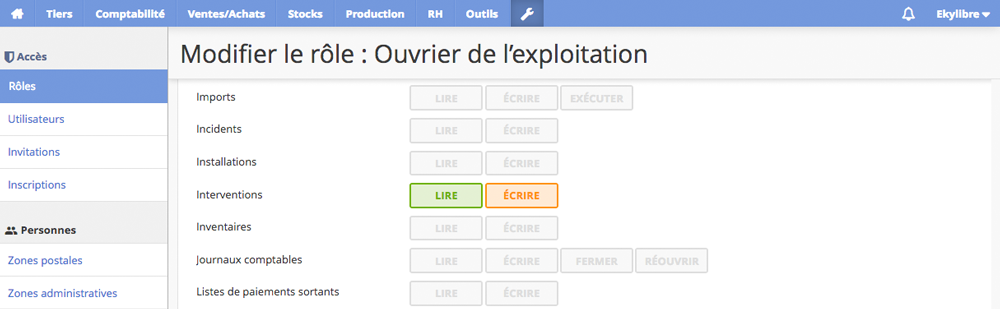
Cliquez sur "Modifier" en bas de la page pour valider les changements ou sur "Annuler" pour abandonner l'opération.
Il est possible de lancer des invitations afin de demander à des utilisateurs de rejoindre votre ferme.
A – Procédure d'invitation d'un utilisateur
Le processus suivant vous guide pour inviter un utilisateur.
Pour créer une nouvelle invitation, allez dans le menu principal et cliquez sur la clef anglaise ou cliquez sur le bouton "Configuration" de la page d'accueil :
ou cliquez sur le bouton "Configuration" de la page d'accueil :
Dans la barre latérale du module, cliquez sur "Invitations" dans la rubrique "Accès" symbolisée par l'icône d'un bouclierpour afficher la liste des invités.
Cliquez sur "Nouveau" puis, dans les "Informations générales"remplissez tous les champs obligatoires signalés par une astérisque de couleur rouge avec les informations requises pour la définir correctement. Affectez un rôle d'utilisateur si vous en avez déjà créé au moins un (mais ce n'est pas obligatoire).
Cliquez surpour lancer l'invitation.
Un email est envoyé à votre contact et la liste des invités est mise à jour. Le statut de l'invitation et de l'utilisateur changent dès que votre invité a accepté votre invitation.
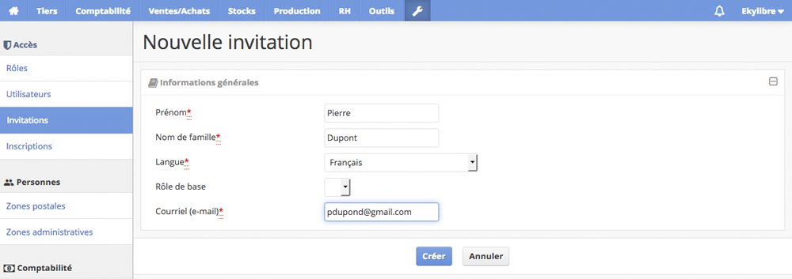
Notez que par défaut, les droits accordés à l'invité sont la lecture et l'écriture d'interventions, même si vous n'avez pas encore pioché ou créé de rôle d'utilisateur.
Un utilisateur qui connaît l'adresse internet de votre ferme et qui souhaite accéder à vos données a la possibilité de vous soumettre son inscription en remplissant le formulaire et en cliquant sur le bouton "Inscription".
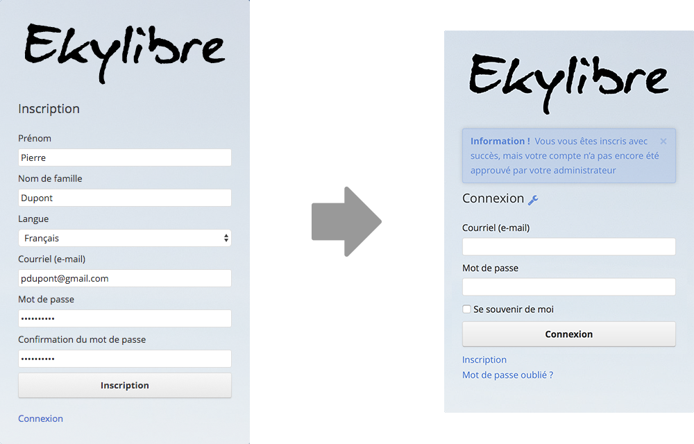
Formulaire d'inscription
Une fois la demande d'inscription réalisée, vous êtes prévenu(e) par la réception d'un email envoyé à votre adresse d'administrateur. À vous de l'accepter ou non.
A – Procédure pour valider les inscriptions
Le processus suivant vous guide pour accepter une inscription.
Pour valider l'inscription d'un nouvel utilisateur, allez dans le menu principal et cliquez sur la clef anglaise ou cliquez sur le bouton "Configuration" de la page d'accueil :
ou cliquez sur le bouton "Configuration" de la page d'accueil :
Dans la barre latérale du module, cliquez sur "Inscriptions" dans la rubrique "Accès" symbolisée par l'icône d'un bouclierpour afficher la liste des inscrits.
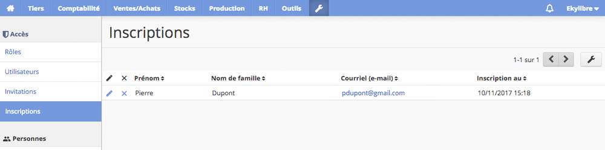
a - Cliquez sur le nom du nouvel inscrit et validez son inscription en cliquant sur "Modifier" ou :
b - Après réception d'un email notifiant l'inscription d'un nouvel utilisateur, cliquez sur le lien permettant votre accord et validez celle-ci en cliquant sur "Modifier".
Dès que vous avez approuvé l'inscription, un email de confirmation est adressé au nouvel inscrit.
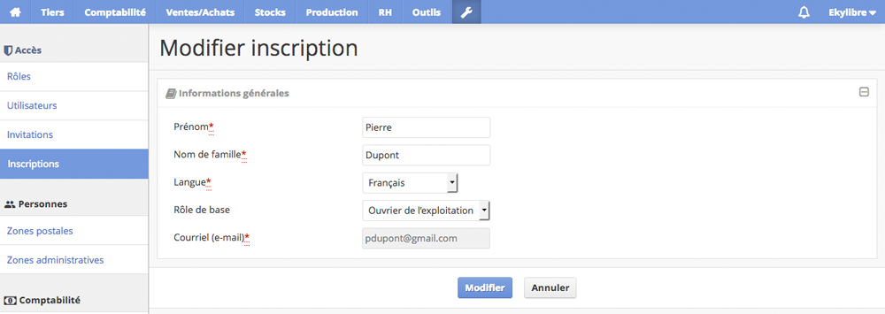
Notez que par défaut, les droits accordés au nouvel inscrit sont la lecture et l'écriture d'interventions, même si vous n'avez pas encore pioché ou créé de rôle d'utilisateur.